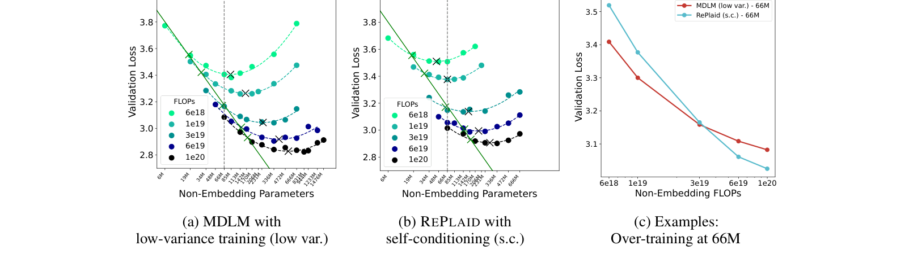
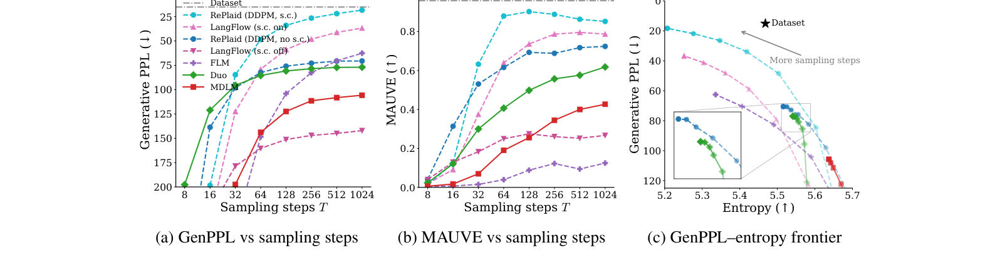
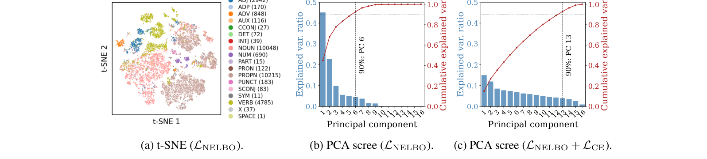
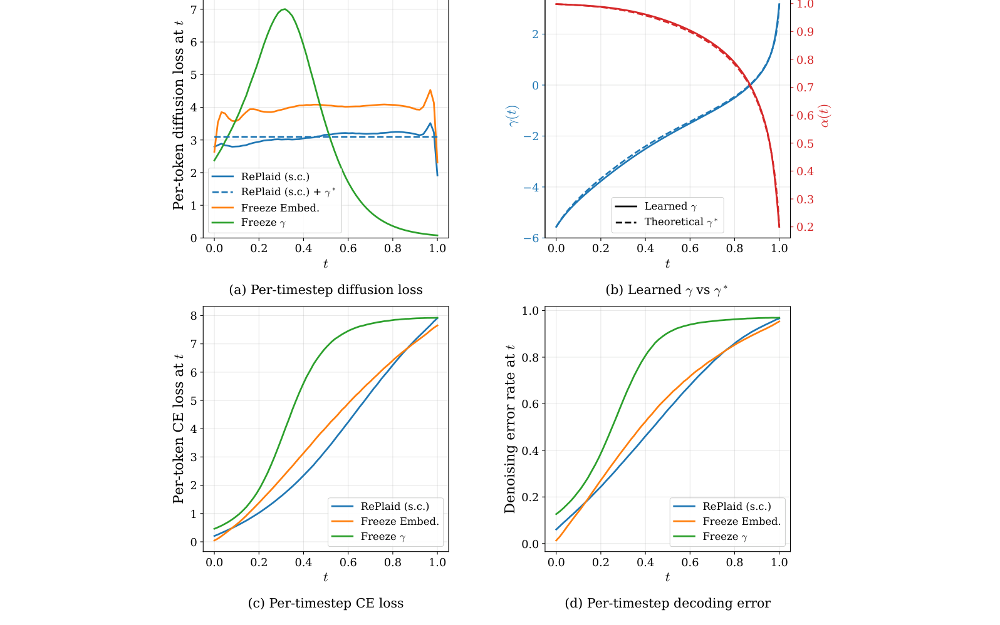

While diffusion has drawn considerable recent attention from the language modeling community, continuous diffusion has appeared less scalable than discrete approaches. To challenge this belief we revisit Plaid, a likelihood-based continuous diffusion language model (DLM), and construct RePlaid by aligning the architecture of Plaid with modern discrete DLMs. In this unified setting, we establish the first scaling law for continuous DLMs that rivals discrete DLMs: RePlaid exhibits a compute gap of only 20× compared to autoregressive models, outperforms Duo while using fewer parameters, and outperforms MDLM in the over-trained regime. We benchmark RePlaid against recent continuous DLMs: on OpenWebText, RePlaid achieves a new state-of-the-art PPL bound of 22.1 among continuous DLMs and superior generation quality. These results suggest that continuous diffusion, when trained via likelihood, is a highly competitive and scalable alternative to discrete DLMs.
Moreover, we offer theoretical insights to understand the advantage of likelihood-based training. We show that optimizing the noise schedule to minimize the ELBO's variance naturally yields linear cross-entropy (information loss) over time. This evenly distributes denoising difficulty without any case-specific time reparameterization. In addition, we find that optimizing embeddings via likelihood creates structured geometries and drives the most significant likelihood gain.
Discrete diffusion language models (DLMs) have shown significant promise, increasingly rivaling the performance and scalability of autoregressive (AR) models across various benchmarks. Continuous diffusion remains a compelling alternative due to its inherent potential for controllability and acceleration. Despite this, continuous diffusion has been viewed as less scalable than discrete diffusion — in part because prior continuous DLMs (e.g., Plaid) were not architecturally aligned with modern discrete DLMs, making fair comparisons difficult.
We close this gap. We revisit Plaid and construct RePlaid by lifting modern DLM design choices (architecture, tokenizer, training pipeline) into the continuous setting, then compare against MDLM and Duo under matched compute. The result: continuous diffusion is far more competitive than the literature suggests.
We train and evaluate on the OpenWebText (OWT) corpus, using a Llama-2 tokenizer and a sequence length of 256. We run an IsoFLOP sweep across six compute budgets \(C \in \{6 \times 10^{18}, 1 \times 10^{19}, \ldots, 1 \times 10^{20}\}\) and roughly 20 model sizes per budget. For each target FLOP budget \(C\), we fit a quadratic in \(\log N\) to the validation loss to identify the compute-optimal parameter count \(N_C^\ast\) and the corresponding optimal loss \(\mathcal{L}_C^\ast\).

IsoFLOP curves. (a) MDLM with low-variance training. (b) RePlaid with self-conditioning. (c) Examples of over-training at 66M parameters — RePlaid (s.c.) eventually crosses below MDLM (low var.) as compute increases.
Fitting power laws to the compute-optimal points across budgets reveals four findings:
We compare unconditional generation quality on OWT (sequence length 1024, 1M training steps) using GenPPL and MAUVE. RePlaid achieves strong sample quality across sampling-step budgets, especially at high NFE, where it approaches AR-level generative perplexity while remaining competitive on MAUVE.

GenPPL and MAUVE vs. sampling steps on OWT. RePlaid achieves competitive sample quality across step budgets and the best GenPPL–entropy frontier (c).
Why does likelihood-based training help? We trace most of the gain to the token embeddings. Visualizing the learned embedding matrix \(\mathbf{E}\) of RePlaid reveals:

Embedding geometry of RePlaid (s.c.) on OWT. (a) t-SNE colored by most-frequent POS tag. (b) PCA score plot of \(\mathbf{E}\). (c) PCA score plot of an ablation that freezes embeddings — the structure disappears.
Likelihood-based training also learns a noise schedule that evenly distributes denoising difficulty across time, rather than relying on hand-crafted time reparameterizations. We give a theoretical justification:
Minimizing the variance of the ELBO over time yields a schedule under which per-timestep cross-entropy (information loss) is linear in \(t\).
Concretely, we prove that for a Bayes-optimal denoiser the constant-per-timestep diffusion-loss condition is equivalent to a closed-form ODE on the schedule \(\gamma(t) = \log(\alpha_t / \sigma_t)\), with a unique solution under a mild endpoint constraint. Empirically, the schedule learned by RePlaid matches this theoretical prediction, while schedules that freeze the embeddings or the schedule itself produce highly non-linear per-timestep losses.

Per-timestep diffusion loss, CE loss, and decoding error for RePlaid (s.c.) and two ablations that freeze the noise schedule or freeze embeddings. The learned schedule (orange) closely matches the theoretical \(\gamma^\ast\) and produces nearly linear CE in \(t\).
@misc{yang2026replaid,
title={Continuous Diffusion Scales Competitively with Discrete Diffusion for Language},
author={Zhihan Yang and Wei Guo and Shuibai Zhang and Subham Sekhar Sahoo and Yongxin Chen and Arash Vahdat and Morteza Mardani and John Thickstun},
year={2026},
eprint={2605.18530},
archivePrefix={arXiv},
primaryClass={cs.CL},
url={https://arxiv.org/abs/2605.18530},
}